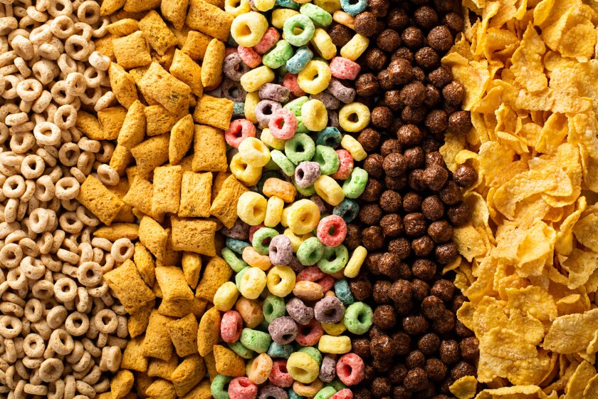

Cereal Recipe

Cereal Ingredient Order Debate
The debate on which order cereal is supposed to be assembled has always been the topic of discussion at the dinner table (or morning table, whatever time people eat cereal). This recipe for cereal will be setting a precedent for the optimal (though still subjective) way of making cereal.
Ingredients
- Milk
- Cereal (whatever cereal you have at your disposal)
- Bowl (not an ingredient but a dish)
- Spoon (not an ingredient but a utensil)
Steps
- Place Bowl on table.
- Place Cereal in bowl.
- Pour Milk on the cereal.
- Dip Spoon into the bowl full of soggy cereal.
- Enjoy! (not the spoon, but the cereal)